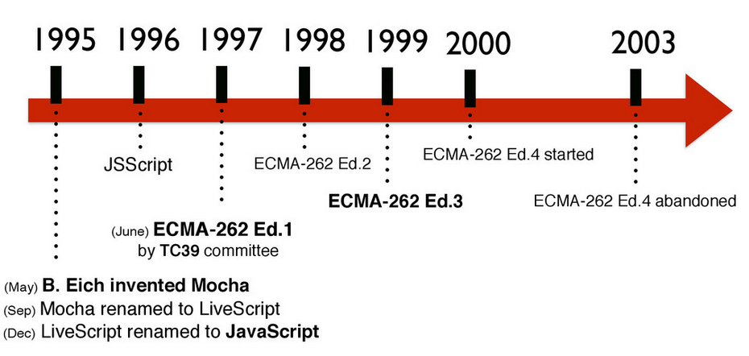
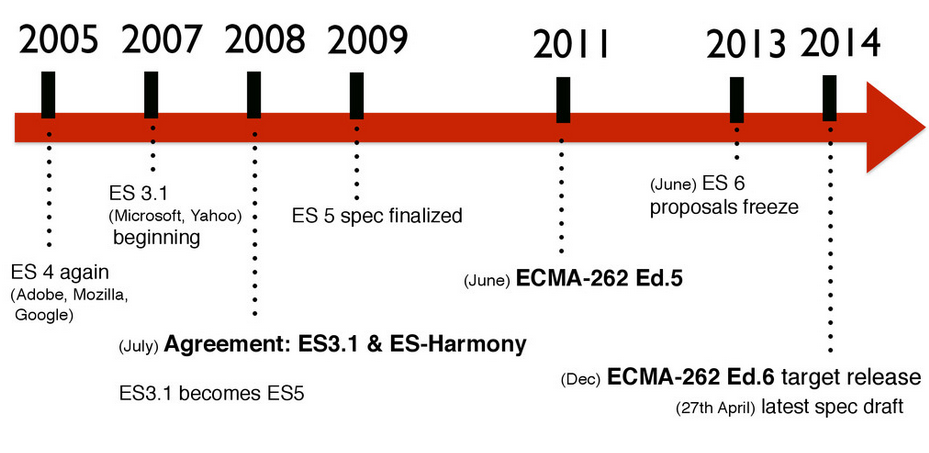

Ideas Claras de Javascript
JavaScript es un lenguaje de programación interpretado por lo que no es necesario compilar los programas para ejecutarlos
Según una separacion en 3 capas de la pagina web, con el Javascript controlariamos la capa del comportamiento:
- Contenido → HTML
- Presentacion → CSS
Comportamiento → Javascript
http://jeffcroft.com/blog/2007/sep/26/new-layers-web-development/
Javascript está basado en ECMAScript (o Ecma-262) que es una especificación de lenguaje de programacion (otro lenguaje "famoso" basado en este standard es ActionScript).
Las diferentes revisiones del Ecma-262 y su implementacion en los navegadores han ido marcando los desarrollos en Javascript
Con la llegada de AJAX (que no es más que el uso de un objeto javascript con el que podemos interactuar con el servidor sin tener que forzar una recarga de página) se abrió una nueva era en la historia del lenguaje
El uso tradicional de Javascript ha sido en el browser, pero ya se ha extendido su uso tambien en el lado del servidor (Node.js), en aplicaciones desktop y en aplicaciones mobile
http://www.youtube.com/watch?v=F6k8lTrAE2g
http://clintberry.com/2013/html5-apps-desktop-2013/
http://www.hongkiat.com/blog/mobile-frameworks/Hay diferencias entre los navegadores debido al uso de diferentes motores de Javascript. Algunos de ellos son:
- Chrome → V8
- Firefox 4 → JagerMonkey
- Opera 10 → Carakan
- Safari → Nitro
Internet Explorer 9 → Chakra
Aunque la diferencia grande siempre ha estado entre Internet Explorer y el resto (hasta IE9)
Estos interpretes (motores) de JS que hay en cada navegador, realizan optimizaciones de código cada uno a su manera de ahí el diferente rendimiento entre navegadores
Un Framework (o libreria) es una coleccion de utilidades comunmente utilizadas que pueden ser utilizadas para desarrollar aplicaciones ahorrando tiempo y esfuerzo. El framework mas conocido y utilizado es jQuery.
Breve historia de Javascript

Javascript fue creado en 10 dias en Mayo de 1995 por Brendan Eich, bajo el nombre de Mocha
La primera version del Javascript aparece en el navegador Netscape 2.0
En diciembre de 1995 SUN Microsystems y Netscape deciden darle el nombre JavaScript (antes se llamó Mocha y LiveScript) por una cuestion de puro marketing (Java era el lenguaje más popular por aquellos dias).
En 1996 Internet Explorer 3.0 incluye una version propia de lo que seria el standard ECMAScript que llama JScript
En 1997 se propuso este lenguaje como standard y la European Computer Manufacturers Association (ECMA) lo adopta como tal. De ahí que tambien se le llame ECMAScript
En Junio de 1997 se publica la primera edición del ECMA-262
En 1998 y a raiz de las diferencias surgidas entre navegadores, la W3C (World Wide Web Consortium) diseñó el standard DOM que es un interfaz (API) para acceder y modificar el contenido estructurado del documento.
En 1999, se sientan las bases del Javascript moderno con el lanzamiento de la tercera edición del ECMA-262, tambien llamado EcmaScript 3

En 2005, se acuña el termino AJAX y revoluciona el mundo del desarrollo web con la llegada de sitios web asíncronos (Gmail, Google Maps...)
En 2005 sale la primera versión de jQuery. Las diferencias entre navegadores han marcado los desarrollos en Javascript hasta el dia de hoy, y han hecho habitual el uso de frameworks (como jQuery) que nos ayuden a lidiar con estas diferencias.
En 2009 se completa y libera la quinta edición del ECMA-262, más conocida como ECMAScript 5. La edicion 5.1 se libera en 2011
En diciembre de 2014 se aprueba la 6ª edicion del ECMA-262 o ECMAScript 6. Se espera el lanzamiento oficial para Junio de 2015
ECMAScript
EcmaScript 5
ECMAScript5.1 fue lanzado en 2011 y podemos decir que es el actual standard de Javascript (2014).
Esta version amplia los anteriores standards con algunas mejoras:
-
function() { "use strict"; }http://cjihrig.com/blog/javascripts-strict-mode-and-why-you-should-use-it/ http://www.nczonline.net/blog/2012/03/13/its-time-to-start-using-javascript-strict-mode/
-
// Creates an object with parent as prototype and properties from donor Object.create(parent, donor); // Meta properties of an object var descriptor = { value: "test", writable: true, // Can the value be changed? enumerable: true, // Will it appear in for-in and Object.keys(object)? configurable: true, // Can the property be removed? set: function(value) { test = value}, // Getter get: function() { return test } // Setter } // Methods for manipulation the descriptors Object.defineProperty(object, property, descriptor) Object.defineProperties(object, descriptors) Object.getOwnPropertyDescriptor(object, property) Object.getPrototypeOf(object) // Returns an array of enumerable properties Object.keys(object) // Returns an array of all properties Object.getOwnPropertyNames(object) // Prevents anyone from adding properties to the object, cannot be undone. Object.preventExtensions(object) Object.isExtensible(object) // Prevents anyone from changing, properties or descriptors of the object. // The values can still be changed Object.seal(object) Objcect.isSealed(object) // Prevents any changes to the object. Object.freeze(object) Object.isFrozen(object) -
var tapir = { method: function(name){ this.name = name; } }; setTimeout( tapir.method.bind(tapir, "Malayan"), 100 ); -
>>> var orig = ' foo '; >>> console.log(orig.trim()); 'foo' -
// Do all elements satisfy predicate? Array.prototype.every(predicate) // Return a new array with the elements that satisfy predicate? Array.prototype.filter(predicate) // Call action(element) for each element. Array.prototype.forEach(action) // What is the index of the first element that equals value? Array.prototype.indexOf(value, fromIndex) // What is the index of the last element that equal value? Array.prototype.lastIndexOf(value, fromIndex) // Create a new array by applying unaryFunc to each element Array.prototype.map(unaryFunc) // Reduces the elements of the array, by applying binaryFunc // between the elements // [a0, a1].reduce(+ , seed) == seed + a0 + a1 Array.prototype.reduce(binaryFunc, seed) // Is at least one element satisfied by the predicate? Array.prototype.some(predicate) Native JSON support with
JSON.parse()andJSON.stringify()
Si miramos las estadisticas de uso de navegadores junto con la compatibilidad de estos con ES5 podemos concluir que: basandonos en ES5 nuestro codigo funcionará bien en la mayoria de los navegadores utilizados actualmente (2014).
Si queremos, podemos dar soporte de algunas features de ES5 en navegadores antiguos que no la soporten, utilizando el correspondiente shim
EcmaScript 3
ECMAScript 3 fue lanzado en 2001 y todos los navegadores (antiguos y modernos) siguen este standard.
Añade (respecto del standard anterior): do-while, expresiones regulares, nuevos metodos de string (concat, match, replace, slice , split con expresiones regulares, etc.), manejo de excepciones y más.
EcmaScript 6
ECMAScript 6 será el proximo standard de Javascript pero aun no está lo suficientemente implantado en los navegadores mas utilizados.
https://6to5.org/docs/tour/
https://github.com/ericdouglas/ES6-Learning
http://es6rocks.com/
http://code.tutsplus.com/articles/use-ecmascript-6-today--net-31582
Aunque podemos dar soporte de estas features de ES6 en navegadores que no las soporten utilizando el correspondiente shim